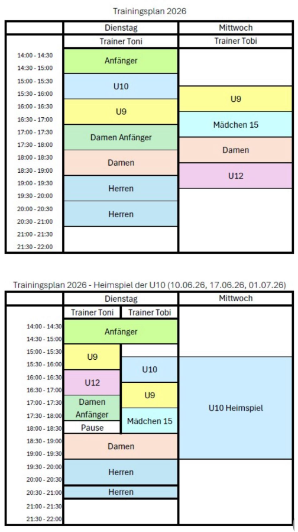

Trainingsplan / Betreuerteam
Unser Betreuerteam und Trainingszeiten
Trainingszeiten 2026
Trainingstage im Jahr 2026 sind Dienstag und Mittwoch.
Trainingsstart für die Dienstagstrainings ist der 21. April 2026! Dienstags trainiert Antal Davide
Trainingsstart für die Mittwochstrainings ist der 22. April 2026! Mittwochs trainiert Tobias Hartmann
Bitte beachten: Kleinfeld U10 trägt am 10.06., 17.06. und 01.07.2026 (jeweils Mittwochs), ihre drei Heimspiele aus.
An den Heimspieltagen der Kleinfeld U10 finden alle Trainingseinheiten am Dienstag zuvor statt. Bitte den dann gültigen Traininsplan beachten
Die graphischen Traininsgpläne

Unser Betreuerteam 2026
| Mannschaft | Interne Betreuer |
|---|---|
| Tennisanfänger | externes Training |
| Kleinfeld U9 | Daniela Gruschka-Aigner, Andrea Schmidbauer, Sabine Ostermeier |
| Kleinfeld U10 | Julia Weinmann |
| Bambini U12 | Daniela Huber, Michaela Zehrer |
| Mädchen U15 | Simone Gabler |
| Damen-I | in Eigenregie |
| Damen-II | in Eigenregie |
| Herren-I | in Eigenregie |
| Herren-II | in Eigenregie |